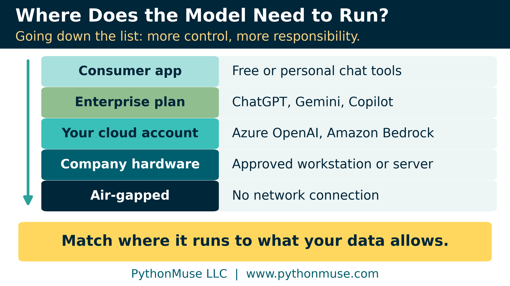
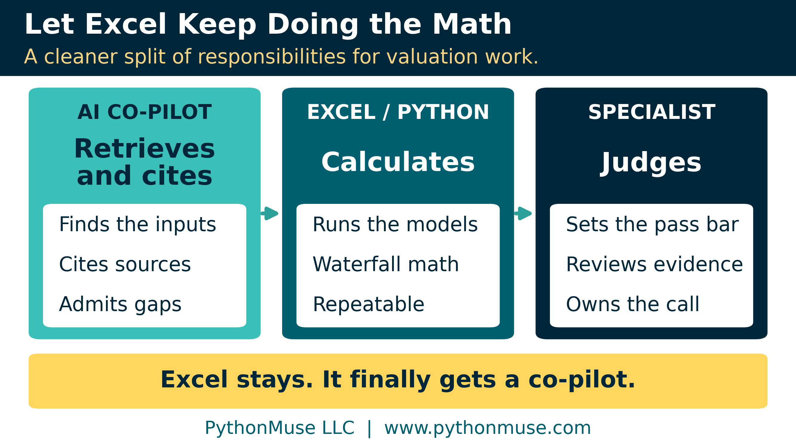
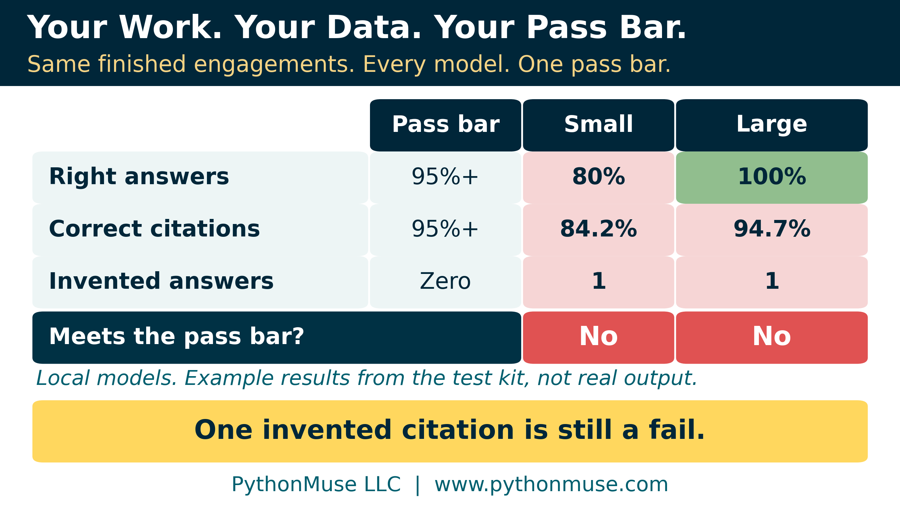
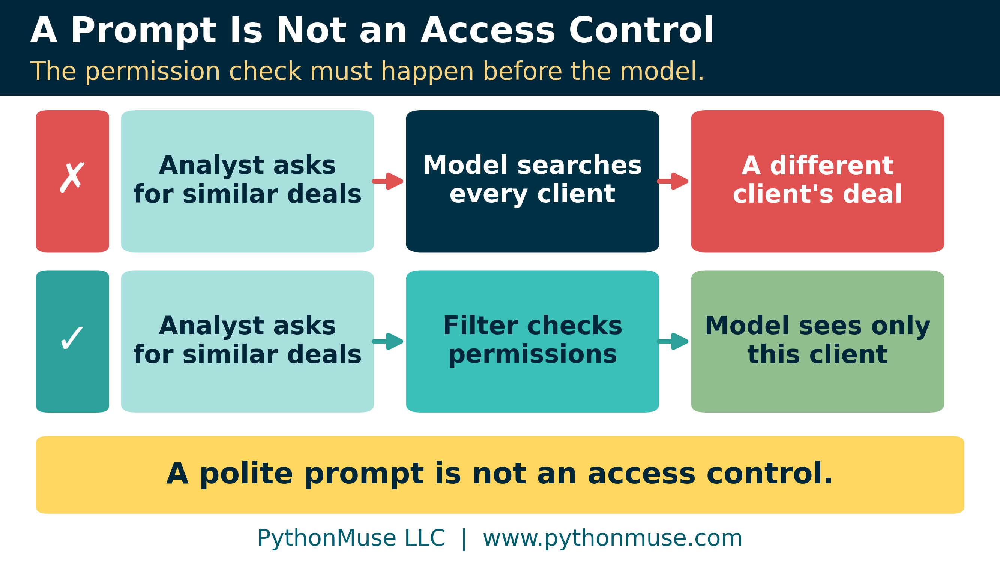

If the Data Can't Leave, Bring the Model In
Exploring local AI for valuation, M&A, and other confidential financial work
PythonMuse LLC Published October 2026

I recently had lunch with a valuation specialist. We talked about M&A transactions, private-company financial statements, debt and securities valuations, and all the confidential information that comes with that work.
When our conversation turned to AI, it ended fairly quickly. The information was simply too confidential, and Excel was still doing much of the heavy lifting.
I understood the concern. In valuation work, protecting client information is part of the job.
But on my drive home, I kept thinking about that conversation. How much time do valuation professionals spend finding documents, comparing agreements, checking information, and preparing files before they even get to the analysis?
Their expertise is valuable. Their time is valuable, too.
So perhaps we were asking the wrong question.
Instead of asking whether confidential financial work can use AI, perhaps we should ask where the AI needs to run.
What If We Bring AI to the Data?
Most of us are familiar with AI applications such as ChatGPT, Claude, Gemini, and Copilot. Depending on the product and configuration, we send information to a service that processes it on the provider's systems.
But that is not the only way to use AI.
Some AI models can run directly on a company's computer or internal server. These are commonly called local models. An organization can also evaluate private cloud environments or enterprise AI platforms with specific contractual and security protections.
These options are not identical. The right choice depends on what the company is permitted to do with its data, where that data may be processed, and what security controls are required.
Running a model locally does not necessarily mean installing AI on every employee's laptop. A company could operate one centrally managed system that authorized employees access through an internal application.
Of course, managing the system also becomes the company's responsibility.
The important point is that confidential data does not automatically mean AI is off the table. It means we need to determine which arrangements are permitted before selecting a tool.
Start With the Work, Not the Model
When organizations explore AI, I often see the conversation start with the technology.
Which model should we buy? Which one is the smartest? Do we need an expensive server?
I would start somewhere else.
What work are our professionals spending time on that AI could help them complete?
For a valuation firm, I would not begin by asking AI to calculate the value of a business.
I would look at the work surrounding the valuation.
Think about the number of documents a specialist may need to review: financial statements, financing agreements, ownership records, prior valuations, correspondence, and supporting schedules.
AI may be able to identify missing documents, locate important terms, compare current and prior agreements, or find the source supporting a particular assumption.
It might even help an analyst find the correct file without opening folders named FINAL, FINAL2, and my personal favorite, FINAL_USE_THIS_ONE.
None of this requires AI to make a valuation decision.
It requires AI to help professionals find, organize, and compare information so they can spend more time doing the analysis they were hired to do.
Let Excel Keep Doing What Excel Does Best
There is another distinction worth making before getting too excited about AI.
Not every part of a financial process needs a language model.
If a valuation requires a discounted cash flow calculation, a Black-Scholes model, or another established financial calculation, I would keep that work in validated Excel models or Python scripts.
These tools follow defined rules and produce repeatable results when the inputs and logic remain the same.
AI can help locate information that belongs in the calculation. It can help organize the supporting documents or draft an explanation of the results.
But the calculation itself should remain in a tool designed for that purpose, and the valuation specialist should review the assumptions and conclusions.
Think of the responsibilities this way:
AI finds and organizes information. Excel or Python performs the calculations. The specialist applies professional judgment.

This distinction also helps explain why a smaller AI model might be sufficient.
A local model may not have all the capabilities of the strongest cloud-based model. But does it need them?
If its assignment is to find three specific terms in seven authorized documents and identify their sources, perhaps a smaller model can do that reliably.
The question is not whether the model can do everything. The question is whether it can perform the specific task we need.
Test It on Work You've Already Completed
This is where I would begin the experiment.
Choose one narrow task from a completed engagement. Ideally, select something a specialist has already performed and reviewed.
For example, ask AI to identify key financing terms from a closed transaction.
Then compare its answers with the documents and conclusions from the original engagement.
Before running the test, have the specialist decide what counts as acceptable performance.
Was the answer correct? Did AI identify the right supporting document? Did it invent information that was not there? How many corrections were needed? Did the process actually save time after review?
A correct answer supported by an invented citation is not a passing result.
And do not use the same engagements for both improving the instructions and independently testing the results. Keep one group for practice and another for scoring.
If the model fails, learn why. It might need better instructions, a different document preparation process, or a more capable model. Or perhaps the task is not suitable for AI yet.
This is why I prefer testing on our own work rather than relying on public model rankings. The model that performs best in a general benchmark may not be the one that works best for a particular accounting or finance process.
I created a Local LLM Test Kit with fictional valuation documents, sample responses, and a scoring method to demonstrate this process.
One illustrative example gets every answer right but still fails because it cites a document that does not exist.

The lesson is simple: we need to test both the answer and the evidence supporting it.
Local Does Not Automatically Mean Secure
Here is where the conversation gets more serious. Moving AI inside your company's environment does not automatically make it secure. You still need to control who can use it, which documents they can access, what information gets recorded, and how changes to the system are managed.
Consider a valuation firm with years of confidential engagements stored in its document system. An analyst asks AI whether the firm has worked on a similar transaction before. AI finds an excellent example and provides a detailed answer.
Unfortunately, the example belongs to another client whose information the analyst was not authorized to access.
The model answered the question. The system still failed.

Professional services firms already understand the importance of keeping certain client information separate. AI does not eliminate that requirement.
The system must verify which documents a user is permitted to access before those documents reach the model.
A prompt saying "respect client confidentiality" is not a security control. If polite instructions were enough, cybersecurity would be a much easier profession.
There are other risks, too. Confidential information can appear in logs, software may have network connections, and documents can contain instructions intended to manipulate the AI.
These are reasons to design and test the environment carefully, not reasons to assume local AI is automatically safe.
The same ONBOARD framework applies here: define the task, approve the environment and instructions, limit access, test the results, preserve evidence, and document what was approved.
Running a model locally gives an organization more control over some aspects of the system. It also gives the organization more responsibility for operating it.
Try It Before You Invest
You do not need to begin with an expensive infrastructure project.
Start by identifying one task and preparing a small set of fictional, redacted, or otherwise approved documents. If company policy permits, a small local model running on an approved computer can be useful for an initial experiment.
Give it a narrow assignment.
For example:
Using only the approved documents, identify the key financing terms and valuation date. For each answer, identify the supporting document and section. If information is missing or inconsistent, flag it instead of guessing. Do not perform calculations or make valuation conclusions.
Compare the results with a known answer key.
If the idea works, expand the test before considering production use. Evaluate accuracy, reviewer effort, cost, security, and whether the technology can support the volume of work.
If it does not work, you have learned something without investing in a full deployment. The goal is not to prove that AI belongs in every process. It is to determine where it can provide value without compromising the quality or confidentiality of the work.
Maybe the Conversation Should Not Have Ended
I understand why our AI conversation at lunch stopped when confidentiality came up. Protecting client information should always come first. But I keep coming back to the same question.
Does confidential information mean we cannot use AI, or does it mean we need to consider a different way of using it?
Local models have limitations. They require technical support, maintenance, security controls, and testing. They may not perform as well as stronger hosted models for every task.
Enterprise platforms may also be a suitable option when their protections meet the company's requirements. The decision should start with the work, the data, and the controls, not with excitement over a particular model.
And Excel does not need to carry the entire workload alone for another twenty years.
Perhaps the next time I have that conversation, instead of ending it when someone says the data is too confidential, I will ask:
If the data cannot leave, what happens when we bring the model in?
For readers who want to go further, the technical appendix covers model sizes, hardware, licensing, document retrieval, security controls, and how to build a testing process. The companion test kit provides fictional documents and examples for practice.
Every product, license, and case-study claim in this article and its appendix was checked against the provider's own documentation in October 2026. The full, dated list is in the technical appendix.
Author's note. This article grew from my conversation with a valuation specialist and was written in collaboration with Patrick Toohey, with human and AI assistance. I reviewed the content, challenged the recommendations, and made the final editorial decisions.
Related: How to Use AI in Accounting Without Sending the Wrong Data | Don't Just Prompt AI. ONBOARD It. | Model Selection Is an Accounting Control | Your AI Workflow Was Approved. Did Anyone Read the Customer Contract? | Buy the Platform. Own the Accounting Logic. | Does This Decision Actually Need a Large Language Model? | Technical Appendix
© 2026 PythonMuse LLC. Content licensed under CC BY-NC-SA 4.0; code licensed under MIT.